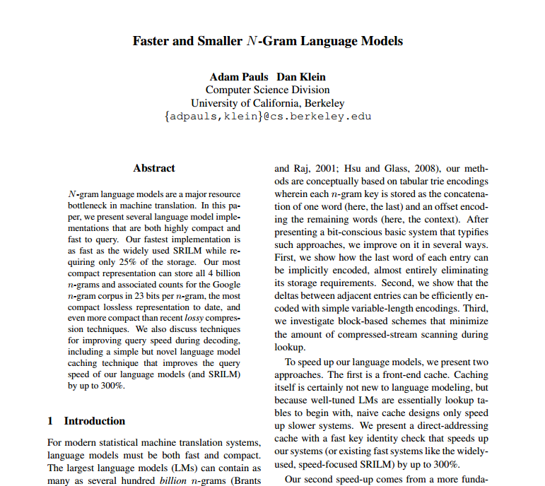

Assessing Quality of Natural Lanugage Text
|
 Masoud Makrehchi
Masoud MakrehchiProblem Definition
Given a body of text,
- Identify problematic sections
- Derive an overall numeric score for the entire text
Given a collection of text articles
- Rank the articles by their language quality
Defining text quality
- Grammatic constructs
No reliable deep parser available. The English grammar is hard to handle efficiently.
We researched the state of the art deep parsers, and found that they were not suitable for industrial deployment.
- Lange model based estimation
We chose this approach.- Requires statistical processing of text.
- Requires sufficiently large existing corpus to train a language model
Enters the Google Book Corpus
-
http://storage.googleapis.com/books/ngrams/books/datasetsv2.html
| Language | American English |
|---|---|
| Source | Books digitized by Google Books: 1800 - 2000 |
| Total words | 155 billion |
| Organization | 1-ngram to 5-ngrams |
| Data size | 24 GB compressed, over 500 GB uncompressed |
Language Model
How can 1/2 TB of strings help us decide on text quality?
- By looking up how often a phrase occurs in literature, we can infer it's popularity.
- Use popularity as a measure of text quality.
Definition:
A language model is a mathematical model that computes the probability of a phrase based on a large sample of observed phrases.
From Google Corpus to A Language Model
Challenges
- The volume of text exceeds the memory capacity of the largest machine we have available. (240 GB required)
-
Using MySQL to store the phrases for look up was
too slow for real-time text analytics.
Each phrase lookup required > 1 s.
Berkeley LM: Approximation by hashing
Computational Linguistics, 2011
Using the Berkeley LM Library
License
Apache License 2.0
Features
- Trains from the Google Book Corpus
- Represents phrases using compressed hash values to save storage space
- Resulted language model is ~ 10 GB
Berkeley LM API
import edu.berkeley.nlp.lm.io.LmReaders;
import edu.berkeley.nlp.lm.NgramLanguageModel;
import java.util.Arrays;
// These files are compiled from the raw Google corpus
// The sorted vocabulary file is used to generate
// space saving hash values
String vocabFile = "vocabulary.gz";
// The language model uses hash vectors on the hash values
// to encode a prefix tree for fast in-memory lookup of phrases.
String modelFile = "englishModel.blm";
// Constructs the in-memory data structure
// ~ 9GB, takes about 2 minutes
NgramLanguageModel model<String> =
LmReaders.readGoogleLmBinary(modelFile, vocabFile);
// Super fast lookup < 0.01 ms
List<String> phrase = Arrays.asList(new String[]{"My name is Jack"});
model.getLogProb(phrase);
Scoring a sentence
So far, we have the ability to pass phrases of
one to five words.
The language model returns a small probability
according to the likelihood of that phrase appearing
in the book corpus.
How do we score a sentence?
We generate all sub-phrases of length one to five from a sentence of arbitrary length.
Detecting anomalies in text
We rank sentences by their weighted averaged scores.
Sentences with low scores are considered poor.
Phrases with the lowest scores of poor sentences are selected.
A piece of text has an aggregated score based on its top-k poor phrases.
Exposing text ranking as a Web service
- We built a Web service to expose the ranking algorithm using a RESTful API.
-
We assume that the text files are organized on the
server side already in the following directory
organization.
- Collection
- Article
- Collection
/nlp/$collection/$article/
// JSON response: 5-gram, 4-gram, .. 1-gram quality
{score: [-8.9, -10.35, ... ]}
/nlp/$collection/$article/?detailed=1&top=10
// JSON response: detailed phrase level scoring information
// included.
{
score: [....],
detail: {
text: "...",
scores: [
[ phrase, score ], ....
]
}
} Demo
Integration
wget http://db.science.uoit.ca:3000/nlp/SEP100/abc.text?detailed=true&top=10
Try it out:
http://db.science.uoit.ca:3000/nlp/..../?detailed=1&top=4
Conclusion
- A statistical language model is built based on the Google Book corpus
- A method for ranking text based on the likelihood of its phrases
- Optimized scoring performance based on Berkeley LM open source library
- An open standard Web service to expose the ranking algorithm and its implementation